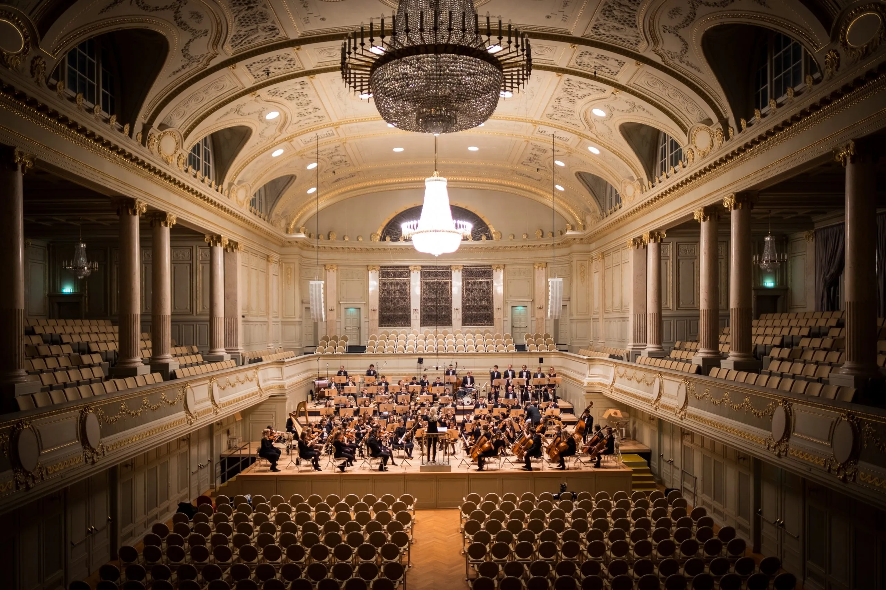
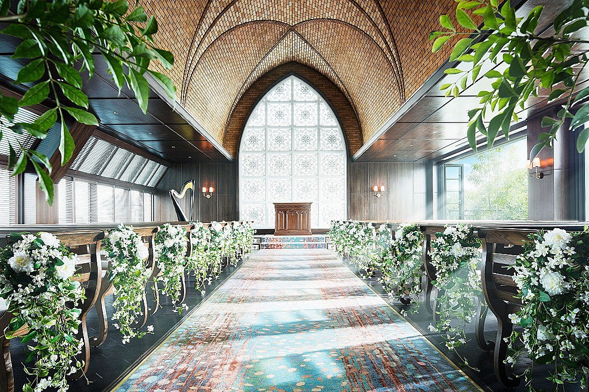

クラシック音楽の世界は、
遠い世界の音楽じゃない。
あなたの毎日に、そっと寄り添っているクラシック音楽。
知らないうちに、出会っているかもしれません。

クラシックの世界へようこそ
あなたの毎日に、そっと寄り添っているクラシック音楽。
知らないうちに、出会っているかもしれません。

「2001年宇宙の旅」など数多くの名場面を彩ります。
有名なクラシック音楽はCMでよく使われています。
試合や入場シーンを盛り上げてくれます。

結婚式の定番曲にもクラシック音楽はたくさん。
ゲームやアニメのBGMにもクラシック音楽が使われています。
モーツァルト
ベートーヴェン
ドビュッシー
チャイコフスキー